EP3 冰河時期：分場表
C 分場（第 10～12 步）：把劇本分成一場一場（不拆鏡頭）→ 每場的地圖 → 這集新的設定圖。這份報告可以不看，流程不停。
摘要第 10～12 步
場一覽第 10 步
| 場 | 地點 | 時間 | 段 | 旁白句 | 地圖 |
|---|---|---|---|---|---|
| 1 | 博士的實驗室（研究小屋一樓） | 夏天中午 | 0 | 7 | lab |
| 2 | HERO 的房間 | 夏天早上 | 1 | 4 | home |
| 3 | 博士的實驗室（研究小屋一樓） | 夏天中午 | 1 | 11 | lab |
| 4 | 猛獁草原・降落點（遠方是冰河） | 兩萬五千年前・春天早上 | 2、3 | 20 | ep3_arrive |
| 5 | 河谷邊的小山坡（往下看河谷） | 春天上午 | 3 | 5 | ep3_overlook |
| 6 | 插圖：冰河時期的海岸線（不是實景） | — | 3 | 3 | — |
| 7 | 河谷草原 | 春天中午 | 4 | 12 | ep3_valley |
| 8 | 插圖：博士上課——為什麼會冷（測量器螢幕＋手繪插圖，不是實景） | — | 5 | 26 | — |
| 9 | 插圖：博士上課——是什麼把地球推進冰河期（不是實景） | — | 6 | 21 | — |
| 10 | 帕夫洛夫人的營地（河谷上方的山坡） | 黃昏到晚上 | 7 | 30 | ep3_camp |
| 11 | 河谷邊的小山坡（往下看猛獁象群） | 隔天清晨 | 8 | 25 | ep3_overlook |
| 12 | 帕夫洛夫人的營地（河谷上方的山坡） | 隔天上午 | 9 | 19 | ep3_camp |
| 13 | 插圖：Spadzista 遺址和那根肋骨（不是實景） | — | 9 | 13 | — |
| 14 | 死路（三面過不去的陷阱地形） | 隔天下午 | 10 | 31 | ep3_trap |
| 15 | 帕夫洛夫人的營地（河谷上方的山坡） | 晚上 | 11 | 12 | ep3_camp |
| 16 | 帕夫洛夫人的營地（河谷上方的山坡） | 隔天清晨 | 12 | 8 | ep3_camp |
| 17 | 博士的實驗室（研究小屋一樓） | 夏天下午 | 13 | 8 | lab |
| 18 | 博士的實驗室（研究小屋一樓） | 夏天下午 | 14 | 2 | lab |
每一場第 10、11 步
第 1 場 博士的實驗室（研究小屋一樓） 夏天中午・段落 0
旁白全文
- 0-01今天熱到柏油路都快融化了。
- 0-02你躲在博士的實驗室裡，對著電扇猛吹。
- 0-03這時候博士走過來，看了看溫度計，忽然說了一句很奇怪的話。
- 0-04他說，我們現在，其實還活在冰河期裡。
- 0-05你看看窗外的大太陽。（停）冰河期？在哪裡？
- 0-06其實沒錯，大家說的「冰河時期」，是個很容易搞混的名字。
- 0-07因為那個冰河期，到今天都還沒結束。

第 2 場 HERO 的房間 夏天早上・段落 1
旁白全文
- 1-01先說說，你今天為什麼會在這裡。
- 1-02上一次，你拿回了學生證，博士還送了你一本《地心冒險》。
- 1-03可是書又不能吃，你的帳單，還是一張一張地寄來。
- 1-04算一算，博士欠你的工錢，已經兩趟了。
出場角色和狀態
- HERO 夏天的打扮：短袖、短褲、拖鞋，沒戴帽子、沒背背包
道具
《地心冒險》（上一集博士送的書）、一疊帳單、學生證
地圖 home第 11 步

第 3 場 博士的實驗室（研究小屋一樓） 夏天中午・段落 1
旁白全文
- 1-05所以今天，你是來討錢的。
- 1-06沒想到博士卻說，錢的事等一下再說，你先聽他講。
- 1-07他說，這個冰河期，差不多在三百萬年前就開始了。
- 1-08從那時候起，地球就一下冷、一下暖，來來回回。
- 1-09博士想知道，地球為什麼會這樣擺來擺去，現在又為什麼暖得這麼快。
- 1-10所以他要你去冰河期最冷的時候，看一看，量一量。
- 1-11說著，他把一個小小的測量器，塞進你的手裡。
- 1-12你只問了一件事：這一次，真的會付錢嗎？
- 1-13博士點點頭。（停）你決定，再相信他一次。
- 1-14他又把生存指南推了過來，你說好，然後把它放在桌上，
- 1-15轉身，就走進了時光機。
第 4 場 猛獁草原・降落點（遠方是冰河） 兩萬五千年前・春天早上・段落 2、3
旁白全文
- 2-01光一閃，你回到了兩萬五千年前。
- 2-02這裡是今天的東歐，現在是春天。
- 2-03你的第一個感覺是：冷。
- 2-04冷到你的鼻子，一下子就痛了起來。
- 2-05這是人類歷史上最冷的時期之一，而你，剛好站在地球上最冷的地方之一。
- 2-06遠方是一整片冰河，比摩天大樓還要高。
- 2-07它蓋住了今天的加拿大、斯堪地那維亞，還有北歐。
- 2-08冰原正中間最厚的地方，超過一英里，也就是一千六百公尺。
- 2-09就算是靠近邊緣、比較薄的地方，那道冰牆還是高得嚇人。
- 2-10天空很藍，一朵雲都沒有，太陽很亮，卻一點也不暖。
- 2-11你伸手想拿生存指南。（停）它還在博士的桌上。
- 2-12你再低頭看看自己：短袖、短褲、拖鞋。
- 2-13你穿得，像是要去海邊。
- 3-01這時候的地球，全世界平均起來，比今天冷了大約六度。
- 3-02聽起來好像不多，可是就是這六度，讓冰蓋住了大半個北半球。
- 3-03現在是春天，可是到了冬天，這裡會連續好幾個星期都在零下十幾度，
- 3-04最冷的時候，接近零下二十度。
- 3-05而且，這裡很乾。
- 3-06因為北邊那一大片冰，把大西洋吹來的水氣，全都擋住了。
- 3-07所以這裡一年下的雨，少得跟沙漠差不多。
出場角色和狀態
- HERO 夏天的打扮：短袖、短褲、拖鞋，沒戴帽子、沒背背包，凍得發抖，手裡拿著博士的測量器
道具
測量器、冰河（遠方一整排，比摩天大樓還高）
地圖 ep3_arrive第 11 步

第 5 場 河谷邊的小山坡（往下看河谷） 春天上午・段落 3
旁白全文
- 3-08你爬上一個小山坡，往下看。
- 3-09高的地方光禿禿的，像北極的荒漠。
- 3-10可是低的地方，河谷裡，卻長滿了草。
- 3-11因為冰河一直把磨碎的石頭粉帶下來，變成很肥的土。
- 3-12有水的河谷熱熱鬧鬧，乾的高地什麼都沒有，兩邊差得不得了。
出場角色和狀態
- HERO 夏天的打扮：短袖、短褲、拖鞋，沒戴帽子、沒背背包，凍得發抖，手裡拿著博士的測量器
道具
測量器
地圖 ep3_overlook第 11 步

第 6 場 插圖：冰河時期的海岸線（不是實景） —・段落 3
旁白全文
- 3-13而這時候，也是冰最多的年代。
- 3-14那麼多的水都凍成了冰，海面比今天低了大約一百二十公尺。
- 3-15很多今天是海的地方，那時候都還是陸地。
出場角色和狀態
- —
道具
—
地圖 （沒有實景，不用地圖）第 11 步
第 7 場 河谷草原 春天中午・段落 4
旁白全文
- 4-01你沿著河谷走。這一片又冷又大的草原，叫做「猛獁草原」。
- 4-02草原上的動物，組合得非常奇怪。
- 4-03有北極狐，有馴鹿，有野牛，這些看起來，都還算正常。
- 4-04可是旁邊，竟然有一隻全身長毛的犀牛，在吃草。
- 4-05犀牛的旁邊，還有一隻狼獾。
- 4-06遠處有一群狼，再過去，竟然還有獅子。
- 4-07那是「洞獅」，比今天非洲的獅子，還要再大一點。
- 4-08從古人在洞穴裡畫的畫看起來，公洞獅好像沒有那一圈大鬃毛。
- 4-09還有熊，還有鬣狗。
- 4-10草叢裡，有一隻豹，正悄悄地移動。
- 4-11河谷裡的草很好，養活了一大堆大型的草食動物：野牛、馬，還有猛獁象。
- 4-12而盯著牠們的，是狼，是洞獅，還有人類。
出場角色和狀態
- HERO 夏天的打扮：短袖、短褲、拖鞋，沒戴帽子、沒背背包，凍得發抖，手裡拿著博士的測量器
- ANIMALS 北極狐、馴鹿、野牛、馬、披毛犀、狼獾、狼群、洞獅（公獅沒有大鬃毛）、熊、鬣狗、豹（草叢裡）；遠處有猛獁象
道具
測量器
地圖 ep3_valley第 11 步

第 8 場 插圖：博士上課——為什麼會冷（測量器螢幕＋手繪插圖，不是實景） —・段落 5
旁白全文
- 5-01你手上的測量器，突然亮了起來。
- 5-02螢幕上是博士，他要開始上課了。
- 5-03地球為什麼會變得這麼冷？答案，在空氣裡。
- 5-04空氣裡的二氧化碳，就像是地球的一條棉被。
- 5-05它會把本來要跑到太空去的熱，留下來。
- 5-06二氧化碳多，地球就暖；二氧化碳少，地球就冷。
- 5-07在恐龍剛出現的三疊紀，空氣裡的二氧化碳，大約有兩千 ppm。
- 5-08ppm 的意思是，每一百萬個空氣分子裡，有幾個是二氧化碳。
- 5-09那時候，連北極圈裡，都有長滿蕨類的海灘，你可以在那裡泡水。
- 5-10可是在更早的成冰紀，二氧化碳少到不到四十 ppm。
- 5-11整個地球都結了冰，冰一路蓋到了赤道。
- 5-12那麼，二氧化碳到底是從哪裡來的？
- 5-13在人類開工廠以前，主要是靠火山。
- 5-14三疊紀快結束的時候，有一場火山噴發，持續了五百年。
- 5-15噴出來的岩漿，有一百萬立方英里，大約是四百多萬立方公里。
- 5-16它噴出的二氧化碳，跟整個二十一世紀人類排放的一樣多。
- 5-17結果地球變熱了，全世界四分之三的生物，都滅絕了。
- 5-18不過，二氧化碳也有離開空氣的辦法。
- 5-19它會溶進雨水和海水，碰到剛被侵蝕出來的新岩石。
- 5-20岩石裡的鈣和鎂，會把碳抓住，這叫做「風化」。
- 5-21最後，它們沉到海底，變成一層一層的石灰岩。
- 5-22所以碳會從岩石，到火山，到空氣，到海洋，最後又回到岩石。
- 5-23其實，地球上絕大部分的碳，都鎖在石頭裡。
- 5-24而且天氣越熱，風化就越快，抓走的碳就越多。
- 5-25所以地球自己，最後會把多出來的二氧化碳清掉。
- 5-26只不過，這要花上幾十萬年。
出場角色和狀態
- HERO 夏天的打扮：短袖、短褲、拖鞋，沒戴帽子、沒背背包，凍得發抖，手裡拿著博士的測量器（只在開頭看螢幕）
- PROF 在測量器的螢幕上講課
道具
測量器（螢幕）、插圖：地球蓋棉被、三疊紀北極圈蕨類海灘、成冰紀冰蓋到赤道、三疊紀末大噴發、碳循環、海底石灰岩
地圖 （沒有實景，不用地圖）第 11 步
第 9 場 插圖：博士上課——是什麼把地球推進冰河期（不是實景） —・段落 6
旁白全文
- 6-01那這一次的冰河期，又是怎麼開始的？
- 6-02科學家很重視一個說法：冰河期，常常跟熱帶的板塊相撞有關。
- 6-03板塊一撞，就會把一大堆新的岩石，推出地面。
- 6-04而這種新的岩石，最會吸二氧化碳。
- 6-05大約三百萬年前，澳洲一路往北漂。
- 6-06它把印尼一帶的海上通道，擠得越來越窄。
- 6-07科學家推測，這可能就是把地球推進冰河期的開關之一。
- 6-08當時，很多新鮮的岩石被抬了起來。
- 6-09溫暖的雨，把岩石裡的鈣和鎂沖進海裡，
- 6-10把幾十億噸的碳，鎖進了石灰岩，地球，就冷了下來。
- 6-11可是，就算在冰河期裡面，地球也還是會忽冷忽熱。
- 6-12因為地球轉的時候，會像陀螺一樣，慢慢地晃。
- 6-13大約四萬年，晃一圈。
- 6-14晃到某些角度的時候，冬天照到的陽光變少，
- 6-15海流跟著改變，海洋就把更多的碳吸了進去。
- 6-16兩萬五千年前，北半球剛好晃到最低點。
- 6-17空氣裡的二氧化碳，只剩下工業時代以前的三分之二左右。
- 6-18棉被被掀掉了，巨大的冰層，蓋住了北半球大部分的地方。
- 6-19也就是，你現在看到的這個世界。
- 6-20博士說完了，螢幕，暗了下來。
- 6-21而你，還穿著短褲。
出場角色和狀態
- HERO 夏天的打扮：短袖、短褲、拖鞋，沒戴帽子、沒背背包，凍得發抖，手裡拿著博士的測量器（只在最後兩句：螢幕暗下來、還穿著短褲）
- PROF 在測量器的螢幕上講課
道具
測量器（螢幕）、插圖：澳洲往北漂擠窄印尼海道、新岩石被抬起、地球像陀螺晃、冰層蓋住北半球
地圖 （沒有實景，不用地圖）第 11 步
第 10 場 帕夫洛夫人的營地（河谷上方的山坡） 黃昏到晚上・段落 7
旁白全文
- 7-01太陽下山了，你冷得牙齒一直打架。
- 7-02這時候，你看到山坡上，有火光。
- 7-03那是一群人，考古學家叫他們「帕夫洛夫人」。
- 7-04他們大約在三萬年前到兩萬五千年前，住在今天捷克的摩拉維亞一帶。
- 7-05在很多卡通裡，冰河時期的人都拿著大木棒、披著虎皮，看起來笨笨的。
- 7-06可是帕夫洛夫人，一點也不笨。
- 7-07他們跟你我一樣，都是現代人，至少跟我們一樣聰明。
- 7-08他們會吵架、會說笑、會唱歌，也有自己的信仰和習俗。
- 7-09而且，他們很高。
- 7-10男人平均差不多一百八十公分，跟今天全世界最高的國家差不多。
- 7-11有一個人看你冷成這樣，丟給你一件毛皮大衣。
- 7-12這種大衣，是用陷阱抓來的北極狐、狼和狼獾的毛皮，縫得很講究。
- 7-13他們還會做藝術品，會用黏土捏出小小的女人像，再放進火裡燒。
- 7-14考古學家叫它「維納斯像」，是目前知道最古老的陶製人像之一。
- 7-15你發現，他們的火，燒的不是木頭，是骨頭。
- 7-16因為這片草原上，幾乎沒有樹。
- 7-17很久很久以後，還有人用猛獁象的骨頭蓋房子，不過那是一萬年以後的事了。
- 7-18營地裡，還有小孩跑來跑去，好奇地盯著你的短褲。
- 7-19火堆旁邊，趴著一隻長得很像狼的動物，正在打瞌睡。
- 7-20牠，可能是世界上最早的狗之一。
- 7-21在同一個文化的另一個遺址，考古學家找到三個這樣的頭骨，其中一個的嘴裡，還含著一塊猛獁象的骨頭。
- 7-22不過，牠們到底是狗還是狼，科學家到現在還在吵。
- 7-23確定是狗、沒有人吵的，最早也要到一萬四千年前。
- 7-24至於羊、牛、豬這些家畜，那時候一隻都還沒有。
- 7-25他們的營地，就蓋在河谷上面的山坡。
- 7-26從這裡往下看，整個河谷的動靜，都看得一清二楚。
- 7-27要在這麼冷的地方活下去，身體要燒掉很多能量。
- 7-28所以要吃很多肉，很多油。
- 7-29而在這裡，最多肉、最多油的，就是猛獁象。
- 7-30在某一個人類營地的垃圾堆裡，百分之九十八的骨頭，都是猛獁象的。
出場角色和狀態
- HERO 夏天的打扮：短袖、短褲、拖鞋，沒戴帽子、沒背背包，凍得發抖，手裡拿著博士的測量器 → 拿到毛皮大衣後：短褲、拖鞋，外面披著帕夫洛夫人給的毛皮大衣，手裡拿著測量器
- HUNTERS 帕夫洛夫獵人（好幾個，男女都有，很高，穿講究的毛皮衣服）
- CHILD 帕夫洛夫人的小孩（約八歲，穿縮小版的毛皮衣服），跑來跑去、盯著 HERO 的短褲
- DOG 像狼的狗（可能是最早的狗之一；灰褐色、比狼矮一點），趴在火堆旁打瞌睡
道具
骨頭燒的火堆、毛皮大衣、黏土捏的小女人像（維納斯像）放在火邊燒、毛皮衣服、猛獁象骨頭（營地裡的垃圾堆）
地圖 ep3_camp第 11 步

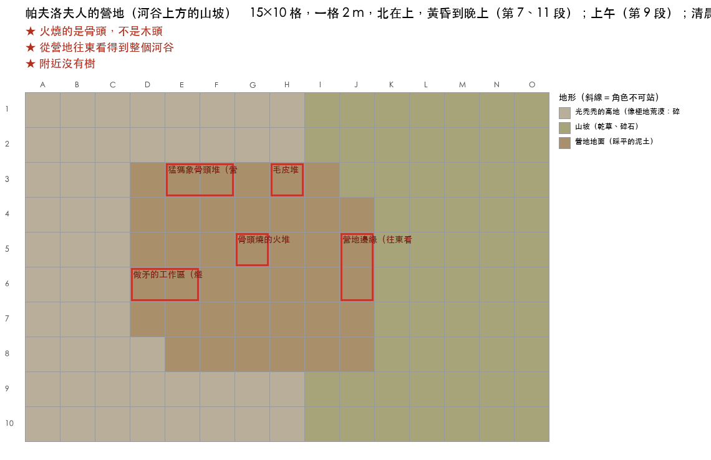
第 11 場 河谷邊的小山坡（往下看猛獁象群） 隔天清晨・段落 8
旁白全文
- 8-01第二天一早，獵人帶你趴在山坡上，往下看。
- 8-02河谷裡，有一群猛獁象。
- 8-03牠們大得，像一輛小巴士。
- 8-04一頭成年的猛獁象，重達六噸。
- 8-05公象的肩膀，離地大約三公尺，最大的到三公尺半；母象矮一點，大概兩公尺半。
- 8-06牠們的象牙，有八英尺長，大約兩公尺半。
- 8-07先往外、往上，再往內，捲成一個大圈，最長的，可以長到四公尺。
- 8-08全身都是長長的毛，耳朵和尾巴，比今天的大象小很多。
- 8-09肩膀上有一個凸起，頭頂也高高地拱起來。
- 8-10牠們的毛，是深褐色的。
- 8-11你在博物館看到的那種橘紅色的毛，其實是在地底埋了幾萬年，褪色變成的。
- 8-12而牠，是人類獵過最危險的獵物。
- 8-13今天的非洲象，是牠的近親，體型也差不多。
- 8-14就算是拿著槍的盜獵者，有時候也會被非洲象殺死。
- 8-15而你，只有棍子和石頭。
- 8-16獵人指著一頭落單的老公象，搖了搖頭。
- 8-17老公象常常自己走，看起來好像比較好下手，可是獵人很少去惹牠。
- 8-18因為牠們又大，又兇，
- 8-19特別是在「狂暴期」的時候。
- 8-20狂暴期的公象，連鳥、長頸鹿，甚至樹，都會攻擊。
- 8-21你想把牠趕進陷阱？牠可能直接衝過來。
- 8-22一大群的象，也一樣，不要去碰。
- 8-23這些猛獁象，大約在一萬年前，就從歐洲和亞洲的大陸上消失了。
- 8-24最後一小群，活在北極海的一座小島上，一直撐到大約四千年前。
- 8-25那時候，埃及的金字塔，都已經蓋好了。
出場角色和狀態
- HERO 短褲、拖鞋，外面披著帕夫洛夫人給的毛皮大衣，手裡拿著測量器、趴在山坡上
- HUNTERS 兩三個獵人趴在旁邊
- MAMMOTH 真猛獁象（深褐色長毛、小耳朵、肩膀隆起、頭頂高拱、螺旋象牙；公象肩高約 3 公尺），河谷裡一群，另有一頭落單的老公象
道具
測量器
地圖 ep3_overlook第 11 步
第 12 場 帕夫洛夫人的營地（河谷上方的山坡） 隔天上午・段落 9
旁白全文
- 9-01獵猛獁象，一個人是辦不到的。
- 9-02所以，你加入了他們。
- 9-03第一步，做一把矛。
- 9-04木頭或骨頭做的桿子，前面綁上一塊削尖的燧石。
- 9-05可是，千萬不要用手直接丟。
- 9-06猛獁象的皮，有一英寸厚，大約兩公分半。
- 9-07你用手丟過去，只會讓牠更生氣。
- 9-08所以你要做一個「投矛器」。
- 9-09它是一根短短扁扁的棍子，一頭有鉤子勾住矛，另一頭是握把。
- 9-10它就像讓你的手臂多了一截，甩得更用力。
- 9-11用得好的人，射出去的矛飛快，比用手丟快得多。
- 9-12不過，歐洲找到最早的投矛器，比帕夫洛夫人晚了好幾千年。
- 9-13帕夫洛夫人到底有沒有用投矛器，是科學家從矛頭和傷口推測的。
- 9-14第二步，找地形。
- 9-15獵人們沒有用繩子，也沒有挖陷阱坑。
- 9-16考古學家也沒有找到他們用狗打獵的證據。
- 9-17不過，那隻像狼的狗，還是自己跟來了。
- 9-18他們要做的，是從象群裡，挑出一頭看起來比較弱、或是受了傷的。
- 9-19然後，把牠趕進一條死路。
第 13 場 插圖：Spadzista 遺址和那根肋骨（不是實景） —・段落 9
旁白全文
- 9-20在今天波蘭的克拉科夫，有一個地方，叫做 Spadzista。
- 9-21它在一座小山丘上，北邊是山壁，東邊和西邊，是窪地和峽谷。
- 9-22三面都過不去，就像一個陷阱。
- 9-23考古學家在這裡，挖出了一百多頭猛獁象。
- 9-24以前，很多科學家都覺得，古人只是撿死掉的猛獁象來吃，
- 9-25不是真的去獵。
- 9-26可是這些猛獁象死掉的年紀，不像是自然老死的，比較像是被挑出來獵的。
- 9-27後來，考古學家 Piotr Wojtal，在一根猛獁象的肋骨裡，
- 9-28找到一塊兩萬四千年前的燧石矛尖，還深深地卡在骨頭裡。
- 9-29它穿過了四英寸厚、大約十公分的皮和脂肪，才插進骨頭。
- 9-30這，就是鐵證。
- 9-31這些人不只獵猛獁象，而且，幾乎只獵猛獁象。
- 9-32Wojtal 說：這是人跟猛獁象的戰爭。
出場角色和狀態
- —
道具
插圖：小山丘、北邊山壁、東西兩邊窪地和峽谷、猛獁象肋骨裡卡著燧石矛尖
地圖 （沒有實景，不用地圖）第 11 步
第 14 場 死路（三面過不去的陷阱地形） 隔天下午・段落 10
旁白全文
- 10-01現在，輪到你們了。
- 10-02一邊，是一頭一噸到六噸重、氣到發狂的動物。
- 10-03另一邊，是一群拿著棍子的人。
- 10-04從骨頭上燧石刺進去的角度，Wojtal 認為，
- 10-05獵人們是正面對著猛獁象，一支接一支，很快地把矛射出去。
- 10-06千萬不要從後面偷襲。
- 10-07猛獁象的屁股，跟大象一樣，幾乎刺不進去。
- 10-08你要面對牠，靠得夠近，矛才有力。
- 10-09前面可以，後面，不行。
- 10-10你射出了第一支矛。
- 10-11猛獁象轉過頭來。（停）牠衝過來了。
- 10-12一頭六噸重的猛獁象，可以用每小時三十二公里的速度衝向你。
- 10-13你跑不過牠，牠幾秒鐘，就會追上你。
- 10-14所以，不要跑直線。
- 10-15你要像上次躲暴龍那樣，左、右、左、右，跑之字形。
- 10-16猛獁象跟暴龍差不多大，可是比暴龍笨重得多，轉彎沒那麼快。
- 10-17不過，這只是拖時間，最好，還是躲到牠過不去的地方。
- 10-18牠可以輕輕鬆鬆推倒一棵樹，或是推開一顆像汽車那麼大的石頭。
- 10-19要是被牠撞倒，牠不是用象牙刺你，就是一腳踩下去。
- 10-20二十世紀初，有一位蘇格蘭的獵象人，叫做華特．貝爾。
- 10-21他十六歲，就開始替烏干達的鐵路，獵殺吃人的獅子。
- 10-22他在回憶錄裡寫：大象衝過來的時候，是最嚇人的膽量考驗。
- 10-23他的建議是：不要慌，站穩，一直射，
- 10-24然後祈禱，牠只是嚇嚇你。
- 10-25可是貝爾有槍，你只有棍子和石頭。（停）你決定，還是跑吧。
- 10-26你左轉、右轉、再左轉，鑽到一塊大石頭後面。
- 10-27這時候，那隻狗衝了出去，對著猛獁象狂叫，猛獁象轉過頭去。
- 10-28獵人們從正面，一支接一支，把矛射了進去。
- 10-29猛獁象，終於倒了下來。
- 10-30至於帕夫洛夫的獵人，獵猛獁象的時候，多常送命？
- 10-31Wojtal 說，找到的骨骸太少了，沒有人說得準。
出場角色和狀態
- HERO 短褲、拖鞋，外面披著帕夫洛夫人給的毛皮大衣，手裡拿著測量器、拿著矛和投矛器，後來之字形逃跑、躲到大石頭後面
- HUNTERS 一群獵人正面排開投矛
- DOG 像狼的狗（可能是最早的狗之一；灰褐色、比狼矮一點），最後衝出去對猛獁象狂叫
- MAMMOTH 真猛獁象（深褐色長毛、小耳朵、肩膀隆起、頭頂高拱、螺旋象牙；公象肩高約 3 公尺），被趕進死路的一頭，暴怒、衝向 HERO，最後倒下
道具
矛、投矛器、汽車大小的大石頭、插圖：「矛要射哪裡」（前面打勾、後面打叉）
地圖 ep3_trap第 11 步

第 15 場 帕夫洛夫人的營地（河谷上方的山坡） 晚上・段落 11
旁白全文
- 11-01晚上，大家圍著骨頭燒的火，吃著猛獁象的肉。
- 11-02你手上的測量器，又亮了，博士要你看一個數字。
- 11-03這裡空氣裡的二氧化碳，很低，很低。
- 11-04博士說，在工業革命以前，空氣裡的二氧化碳，是 278 ppm。
- 11-05而現在呢，已經升到了 417 ppm。
- 11-06在地球的歷史上，二氧化碳這麼多的時候，北方都沒有長年不化的冰。
- 11-07那為什麼，今天的冰還在？
- 11-08因為二氧化碳升得太快了，地球的溫度，還在後面追。
- 11-09就像冰箱的插頭被拔掉，裡面那包冷凍豌豆，不會馬上就軟掉，
- 11-10可是，它遲早會軟掉。
- 11-11你看著遠方那面冰牆。
- 11-12你第一次覺得，這些冰，好像也沒有那麼理所當然。
第 16 場 帕夫洛夫人的營地（河谷上方的山坡） 隔天清晨・段落 12
旁白全文
- 12-01該回家了，你按下回家按鈕。
- 12-02（停）沒有反應。
- 12-03你再按一次，還是沒有反應。
- 12-04原來，按鈕被凍住了。
- 12-05你把它湊到骨頭火堆的旁邊，烤了好一會兒。
- 12-06終於，它亮了。
- 12-07你想把毛皮大衣還給那位獵人，他卻揮揮手，要你帶走。
- 12-08光一閃，你回到了現代。
第 17 場 博士的實驗室（研究小屋一樓） 夏天下午・段落 13
第 18 場 博士的實驗室（研究小屋一樓） 夏天下午・段落 14
設定圖（這集新畫的）第 12 步
真猛獁象（公象） REF_MAMMOTH 用在：第 11、14 場（山坡看象群、死路）
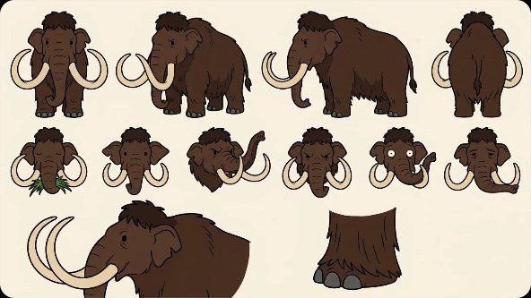
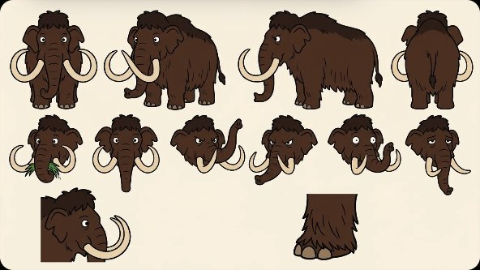

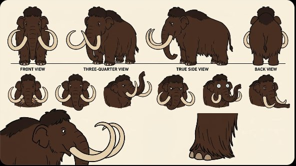
我選：第 3 條 四個全身角度在同一條地面線上、真側面清楚（比例圖要裁）；肩膀隆起、頭頂拱起、螺旋象牙、深褐色都對。第 4 條有文字標籤不能用
prompt（中文）和附的參考圖
參考圖：REF_PROPS
HERO 夏天裝（短袖、短褲、拖鞋，沒帽子沒背包） REF_HERO_SUMMER 用在：第 1～9 場
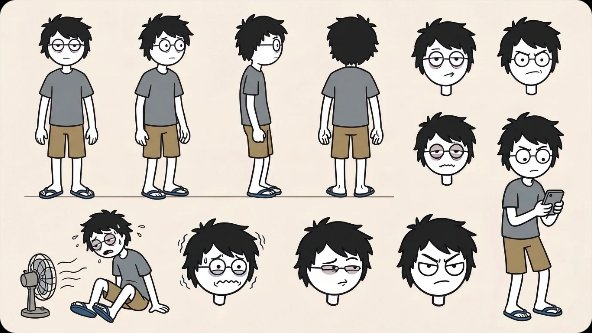
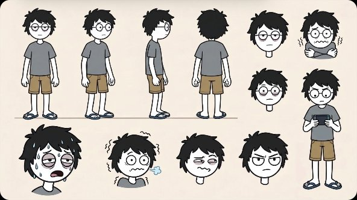

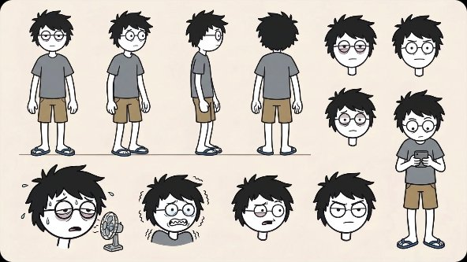
我選：第 3 條 三個指定動作（吹電扇、抱著自己發抖、看測量器）都有；沒帽子沒背包
prompt（中文）和附的參考圖
參考圖：REF_HERO
HERO 披毛皮大衣 REF_HERO_FUR 用在：第 10 場後半～第 18 場

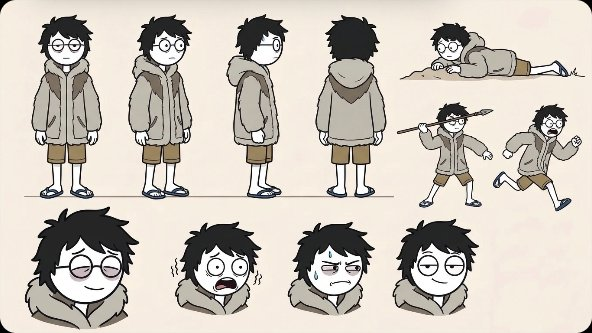
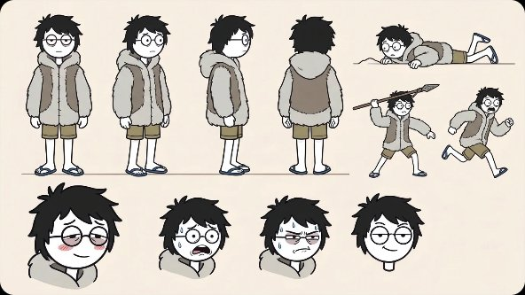

我選：第 1 條 大衣到膝蓋、灰毛拼褐色、四個角度一致；趴著偷看、投矛、逃跑三個動作都有
prompt（中文）和附的參考圖
參考圖：REF_HERO
掠食動物：洞獅、狼、豹、鬣狗、熊、狼獾 REF_PREDATORS 用在：第 7 場（河谷草原）
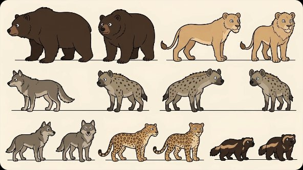

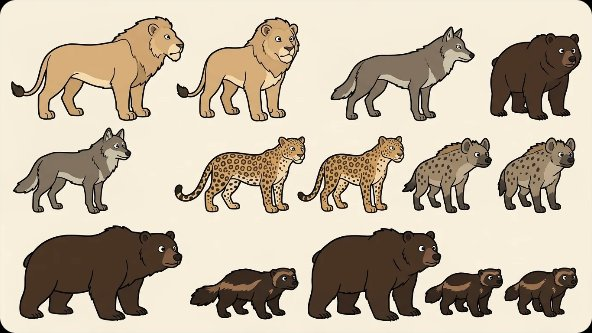
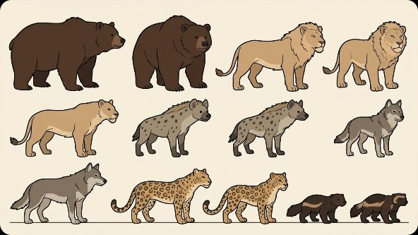
我選：第 1 條 洞獅公獅沒有大鬃毛（只有這條；第 2～4 條都有鬃毛）；六種齊全、顏色自然
prompt（中文）和附的參考圖
參考圖：REF_PROPS
草食動物：披毛犀、野牛、馴鹿、野馬、北極狐 REF_GRAZERS 用在：第 7 場（河谷草原）
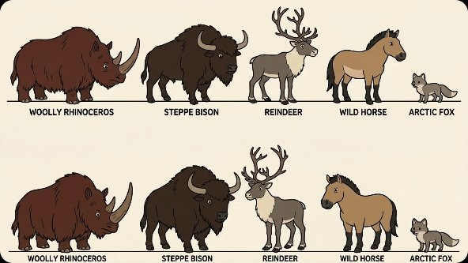


我選：第 3 條 沒有文字（第 1、4 條有標籤）；動物大、細節清楚，每種兩個角度
prompt（中文）和附的參考圖
參考圖：REF_PROPS
EP3 道具：矛、投矛器、燧石矛尖、測量器、結霜的回家按鈕、黏土小人像、骨頭火 REF_PROPS3 用在：全集


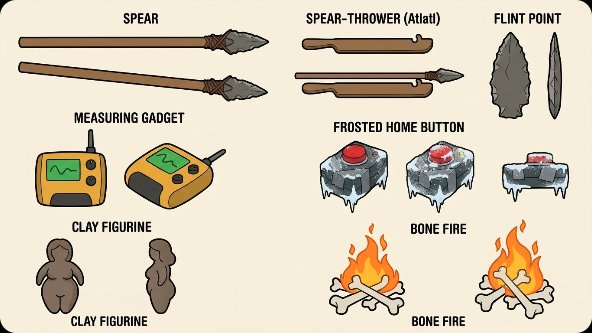

我選：第 2 條 四條都有文字標籤，這條最少（三處）；下載後本機用背景色蓋掉文字
prompt（中文）和附的參考圖
參考圖：REF_PROPS
帕夫洛夫獵人 A：帶頭的男獵人、女獵人（給大衣的那位） REF_HUNTERS_A 用在：第 10～16 場
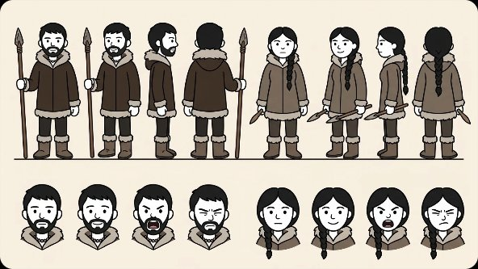
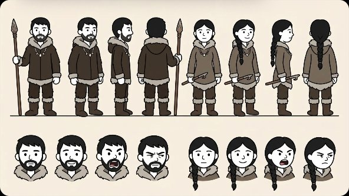

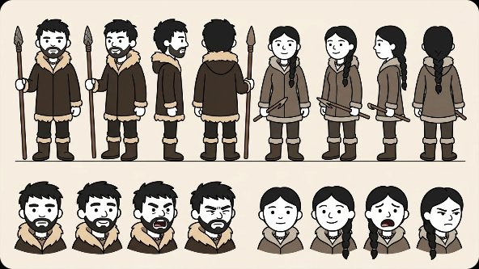
我選：第 4 條 帶頭的有指定的淺色狐毛領邊、跟女獵人一眼分得出；兩人四個角度、四個表情都齊
prompt（中文）和附的參考圖
參考圖：REF_HERO、REF_PROF
帕夫洛夫獵人 B：戴帽兜的年輕獵人、灰鬍子老獵人 REF_HUNTERS_B 用在：第 10～16 場


我選：第 2 條 年輕的戴狐毛帽兜、老的灰鬍子灰髮；老獵人手上是燧石矛尖（第 3 條那束像草葉）；第 4 條有文字標籤
prompt（中文）和附的參考圖
參考圖：REF_HERO、REF_PROF
帕夫洛夫人的小孩（約八歲） REF_CHILD 用在：營地（第 10、12、15、16 場）
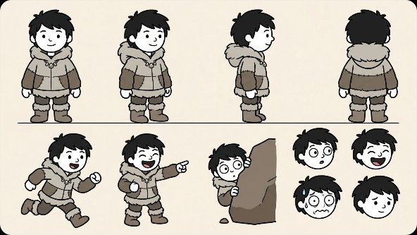


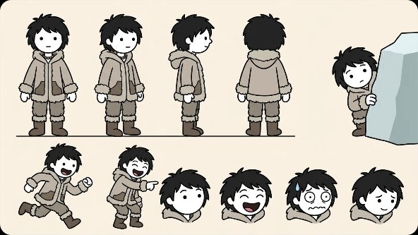
我選：第 1 條 貝殼項鍊清楚；跑步、指著大笑、躲在石頭後偷看三個動作和四個表情都齊
prompt（中文）和附的參考圖
參考圖：REF_HERO、REF_PROF
像狼的早期的狗（左眼上方淺色斑） REF_DOG 用在：營地、死路（第 10、12、14、15、16 場）


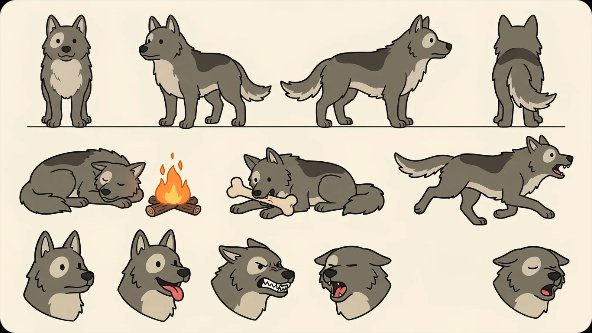

我選：第 1 條 吻部短、臉比狼寬、表情友善，像早期的狗不是狼；打瞌睡、啃骨頭、邊跑邊叫三個動作都有
prompt（中文）和附的參考圖
參考圖：REF_PROPS
猛獁象和 HERO 的比例圖（公象肩高 3.0 m、人 1.72 m；程式照 heights.json 縮放） PAIR2_MAMMOTH 用在：HERO 和猛獁象同框的鏡頭
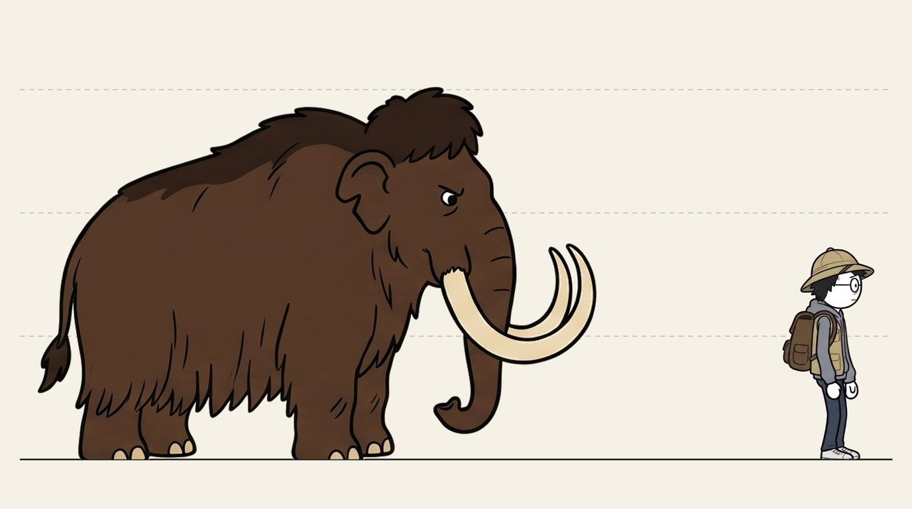
我選：還沒選 不是 Flow 畫的：從 REF_MAMMOTH 的真側面裁出、照查核過的肩高縮放（episodes/003_ice_age/build_pair_mammoth.py）
prompt（中文）和附的參考圖
參考圖：